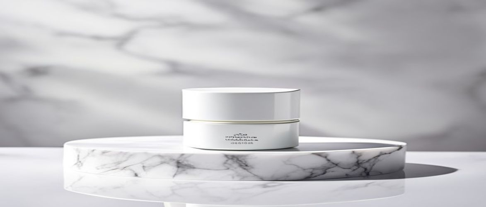

Navigating the world of advanced skincare can be complex, especially when seeking a product that truly delivers on its promises for post-procedure or compromised skin. Many wonder, is clinical sheald recovery balm the ultimate solution for intensive skin repair and soothing? This powerful balm is specifically engineered to provide immediate relief and accelerate the skin's natural healing processes after various dermatological treatments or environmental stressors.
Understanding the science behind such a targeted formula is crucial for anyone looking to optimize their professional skincare routine. This comprehensive guide will delve into its unique formulation, key benefits, and how it stands as a cornerstone in medical-grade skincare for achieving a resilient, healthy skin barrier.
The iS Clinical Sheald Recovery Balm is a clinical formula designed to support the skin's recovery phase, providing essential hydration and protection. It creates a breathable, protective barrier, which is vital for healing and preventing further irritation on sensitive skin.
This dermatologist-tested balm goes beyond simple moisturization, actively working to calm inflammation and reduce discomfort. Its multifaceted approach addresses various post-procedure concerns, making it a staple for those undergoing intensive treatments.
This advanced recovery balm is ideal for individuals with hypersensitive skin or those recovering from various dermatological procedures such as laser treatments, chemical peels, or microneedling. It provides crucial support for compromised skin barriers, accelerating the healing process and minimizing downtime.
Furthermore, anyone experiencing extreme dryness, irritation, or environmental damage can benefit from its restorative properties. Its gentle yet potent formulation makes it a go-to for serious skin recovery needs, ensuring your skin receives the best possible care.
The efficacy of iS Clinical Sheald Recovery Balm lies in its meticulously selected clinical formula, combining potent botanicals with advanced scientific compounds. Each ingredient plays a crucial role in supporting the skin's natural healing mechanisms and restoring its vitality.
| Ingredient / Feature | Skin Benefit / Scent Role |
|---|---|
| Hyaluronic Acid | Intense hydration, plumps skin, supports skin barrier function |
| Ceramides | Reinforces skin's natural lipid barrier, prevents moisture loss, enhances resilience |
| Vitamin B5 (Panthenol) | Soothes irritation, promotes healing, improves skin elasticity |
| Glycerin | Humectant, draws moisture into the skin, enhances hydration |
| Kava Kava Extract | Anti-inflammatory, reduces redness and discomfort, calming properties |
Hyaluronic Acid is a powerful humectant naturally found in the skin, renowned for its incredible ability to attract and hold up to 1,000 times its weight in water. In the Sheald Recovery Balm, it provides intense, lasting hydration crucial for healing and maintaining a supple skin texture.
This deep hydration helps to plump the skin, reduce the appearance of fine lines, and create an optimal moist environment for cellular repair. It’s a cornerstone for reinforcing the skin barrier and preventing transepidermal water loss.
Clinical studies show that adequate hydration provided by hyaluronic acid can significantly improve wound healing rates and reduce scar formation.
Ceramides are essential lipids that make up a significant portion of the skin barrier, acting like mortar between skin cells to create a protective layer. Their inclusion in the balm helps to replenish depleted natural ceramides, which often occurs after procedures or due to environmental damage.
By strengthening this lipid barrier, ceramides effectively prevent moisture loss, shield the skin from irritants, and enhance its overall resilience. This is vital for repairing a compromised skin barrier and achieving long-term skin health.
To maximize the healing and soothing benefits of iS Clinical Sheald Recovery Balm, proper application is key. Consistent and correct use ensures your skin receives the full spectrum of its reparative properties, especially during critical recovery phases.
Always ensure your hands are clean before touching your face, and follow your dermatologist's specific post-procedure instructions. This balm is designed for targeted relief and should be integrated thoughtfully into your professional skincare routine.
One common mistake is applying too much product, which can feel heavy and may not absorb efficiently, potentially leading to a greasy residue. Another error is aggressive rubbing during application, which can irritate already compromised or hypersensitive skin, counteracting the balm's soothing effects.
Additionally, skipping the cleansing step before application can trap impurities against the skin, hindering the healing process. Always ensure your skin is clean and prepped for optimal absorption and effectiveness of the balm.
Always perform a patch test on a small, inconspicuous area of your skin before full application, especially if you have extremely sensitive skin or known allergies.
Understanding the strengths and potential drawbacks of any skincare product is crucial for making an informed decision. The iS Clinical Sheald Recovery Balm offers significant benefits for skin recovery but also has considerations.
Here are some common questions about this specialized balm, addressing its usage, benefits, and suitability for various skin conditions.
Yes, the iS Clinical Sheald Recovery Balm is formulated to be gentle and non-comedogenic, making it suitable for most skin types, including sensitive and acne-prone skin. Its primary goal is to aid in recovery and soothe irritation, which benefits nearly all skin types when compromised.
While primarily focused on healing and soothing, the balm's ability to create an optimal healing environment and support skin barrier function can indirectly help reduce the severity of post-inflammatory hyperpigmentation. Consistent use helps maintain a healthy skin texture during recovery.
For best results after a dermatological procedure, it is generally recommended to apply the iS Clinical Sheald Recovery Balm 1-3 times daily, or as specifically instructed by your skincare professional. Following their precise guidance ensures optimal healing and minimizes complications.
While it provides intense hydration, the iS Clinical Sheald Recovery Balm is primarily designed for targeted recovery and compromised skin states rather than a general daily moisturizer. For daily use on healthy skin, a lighter, more routine-specific moisturizer might be more appropriate, though it can be used if your skin consistently needs barrier support.
Considering its potent blend of reparative ingredients and its proven efficacy in accelerating skin recovery, the iS Clinical Sheald Recovery Balm stands out as a highly valuable investment for compromised skin. It delivers exceptional soothing, hydration, and skin barrier support, making it an indispensable product for post-procedure care or severe irritation.
For those seeking a professional-grade solution to restore skin health and resilience, this balm unquestionably justifies its position as a top-tier medical-grade skincare product. Elevate your skin's recovery journey and experience unparalleled comfort and healing today.
Have questions or a comment on the post? Send us a message and we will get back to you soon.